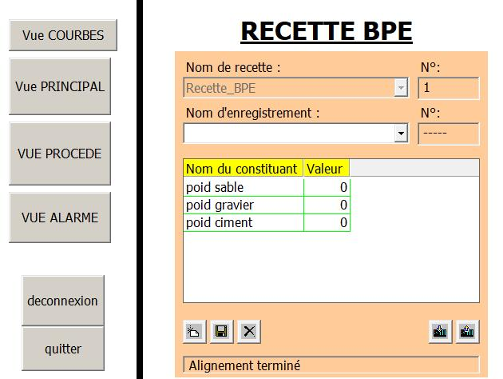
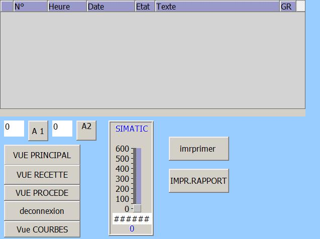
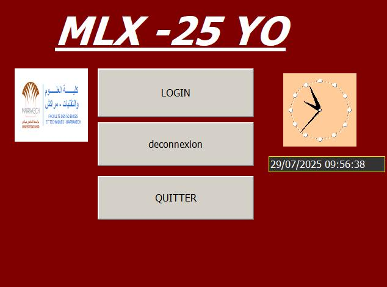
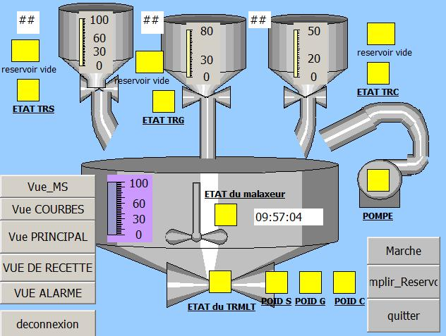
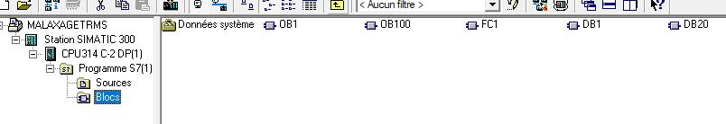

Ingénieur
Sets up the plant
- Recipes and production parameters
- User accounts and access levels
- Alarm thresholds
- Everything the others can do

Case study 03 · Industrial automation
A concrete batching station run by a Siemens S7‑300 and supervised in WinCC flexible 2008: sequential control, alarms, trends, recipes and three levels of access.
A working replica of my process screen. Set the recipe and press Marche: the hoppers dose in turn, the pump adds water, the mixer runs, the mixer hopper discharges. Run a few batches and a hopper runs dry. Arrêt d’urgence stops everything.
A browser replica built for this page: the sequence and screen follow my WinCC project, the timings are sped up. Recipe values are an example concrete mix.
The PLC program is a sequence. Each step does one thing and waits for its condition before handing over to the next. The emergency stop overrides all of it, from any step.
Scroll to walk the cycle.
The interface opens on a login screen. What you can touch depends on who you are.
Ingénieur

Technicien

Opérateur

What each level may do is summarised for this page; the exact rights live in the WinCC user administration.
Levels are logged as curves, so a hopper running low is visible long before it alarms. On/off and analog alarms are kept apart, and run counters feed the preventive maintenance statistics.


A SIMATIC 300 station with a CPU 314C‑2 DP. The S7 program holds five blocks.
This project grew my skills in automation, SCADA supervision, industrial process safety and the ergonomics of operator screens.
Skills